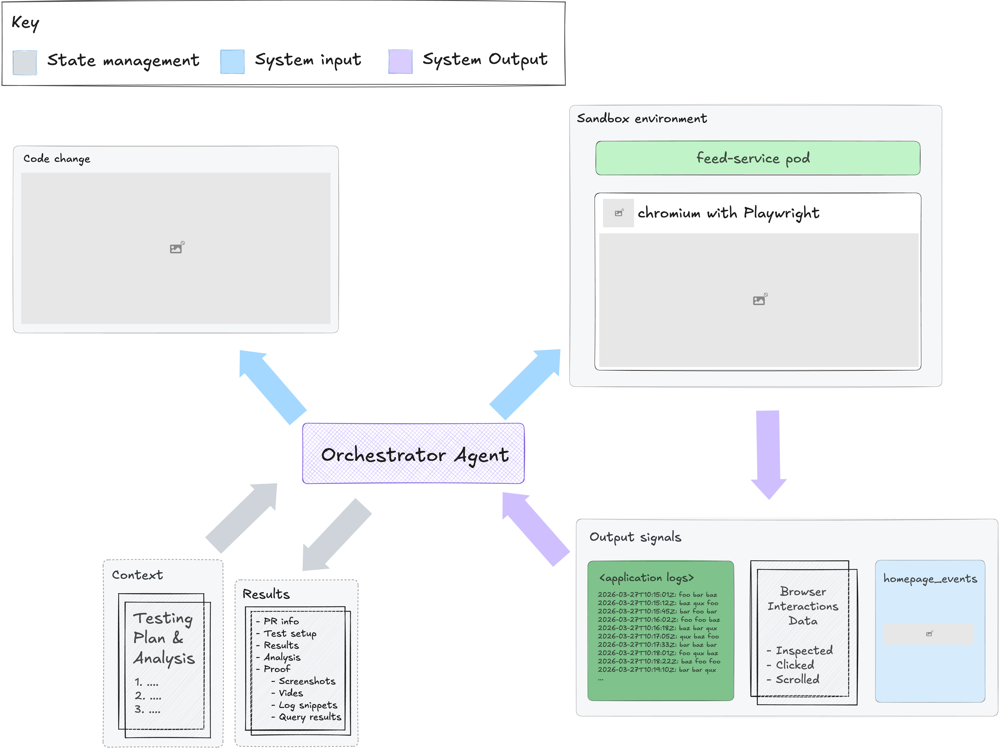

What is a high quality PR? What blocks us? How do we fix it?
Aruj Padbidri & Daniel Fonyo
1Nobody checks all of these every time. We check what we know, skip what we don't.
3| Blocker | What happens |
|---|---|
| Reviewer bandwidth | Engineers are bottlenecks for each other. Reviews sit for days. |
| Inconsistency | Different reviewers catch different things. Friday PRs get rubber-stamped. |
| Knowledge fragmentation | Best practices live in 15+ Confluence docs nobody reads mid-review. |
| Blocker | What happens |
|---|---|
| Testing theater | "Tested on sandbox" = loaded the page once, took a screenshot. |
| Manual validation | 30-60 min per homepage change. Tailing logs, clicking carousels, running queries. |
| No structured evidence | No cross-load comparison. No latency data. No way to detect non-determinism. |
Encode your team's standards into agentic skills.
They run every time, miss nothing, and get smarter with use.
/review-prRemoves PR review complexity
/sandbox-testRemoves testing complexity
It doesn't just flag things. It reads the source code to check if it's right. Then it writes a unit test to prove the bug exists. If the test passes, it drops the finding.
Before reviewing, it searches Glean for relevant internal docs. It found "events >1MB silently dropped" and "Double.NaN caused a SEV-0" from pages I didn't even know existed.
You're one person. You check what you know. These run all at once.
Each dimension is a separate markdown file. Add a check = edit one file. No deployment.
10The skill caught a correctness issue. The author missed it. The human reviewers who approved it missed it. The skill read the source code and confirmed it.
This PR had human approvals. It would have merged.
Also tested on PR #59998 (5 suggestions, 1 question, 2 nits) and PR #62517 (3 suggestions on a clean PR).

"Tested on sandbox, homepage loads."
| Load | Latency | Carousels | Stores |
|---|---|---|---|
| 1 | 1.2s | 12 | 47 |
| 2 | 1.1s | 12 | 47 |
| 3 | 1.3s | 12 | 46 |
11/12 stable. Pod errors: 0. Video + full report attached.
| Metric | Manual | Agent |
|---|---|---|
| Start time | Hours to days | Immediate |
| Dimensions checked | 2-3 | 10 |
| Review time | 15-45 min | ~8 min |
| Confluence lookup | Rarely | Every time |
| Metric | Manual | Agent |
|---|---|---|
| Engineer time | 30-60 min | 10 min plan |
| Evidence | 1 screenshot | 3 loads + data |
| Non-determinism | Invisible | Detected |
| Engineer busy? | Yes, entire time | Free |
Run /review-pr on your own branch. Fix what it finds. Run /sandbox-test to collect evidence. By the time you open the PR, it's already been reviewed and tested.
Point /review-pr at any PR you're added to. Read the findings in 5 minutes instead of reading the diff for 30. Focus your human attention on the judgment calls.
The skills work the same whether you're the author or the reviewer. Same rigor, same evidence, same 10 dimensions.
Imagine what it knows after 6 months of the whole team using it.
17